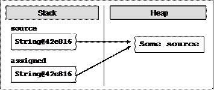
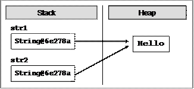
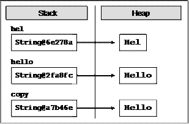
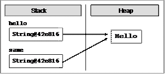
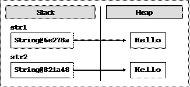
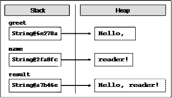
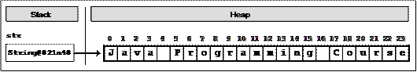
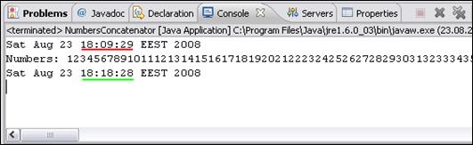
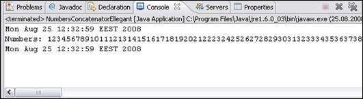
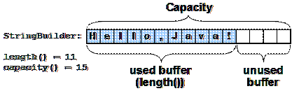

Глава 13. Символни низове
Автор
Марио Пешев
В тази тема...
В настоящата тема ще се запознаем със символните низове: как са реализирани те в Java и по какъв начин можем да обработваме текстово съдържание. Ще прегледаме различни методи за манипулация на текст; ще научим как да извличаме поднизове по зададени параметри, как да търсим за ключови думи, както и да отделяме един низ по разделители. Ще се запознаем с методи и класове за по-елегантно и стриктно форматиране на текстовото съдържание на конзолата, с различни методики за извеждане на числа, а също и с извеждането на отделни компоненти на текущата дата. Накрая ще предоставим полезна информация за регулярните изрази и ще научим по какъв начин да извличаме данни, отговарящи на определен шаблон.
Символни низове
В практиката често се налага обработката на текст: четене на текстови файлове, търсене на ключови думи и заместването им в даден параграф, валидиране на входни потребителски данни и др. В такива случаи можем да запишем текстовото съдържание, с което ще боравим, в символни низове, и да го обработим с помощта на езика Java.
Какво е символен низ (стринг)?
Символният низ е последователност от символи, записана на даден адрес в паметта. Помните ли типа char? В променливите от тип char можем да запишем само 1 символ. Когато е необходимо да обработваме повече от един символ, на помощ идват стринговете.
В Java всеки символ има пореден номер в Unicode таблицата. Unicode е стандарт, създаден в края на 80-те и началото на 90-те години с цел съхраняването на различни типове текстови данни. Предшественикът му ASCII позволява записването на едва 128 или 256 символа (ASCII стандарт със 7-битова или 8-битова таблица). За съжаление, това често не удовлетворява нуждите на потребителя – тъй като в 128 символа могат да се поберат само цифри, малки и главни латински букви и някои специални знаци. Когато опре до работа с текст на кирилица или друг специфичен език (например азиатски или африкански), 128 символа са напълно недостатъчни. Ето защо Java използва 16-битова кодова таблица за символи. С помощта на знанията ни за бройните системи и представянето на информацията в компютрите, можем да сметнем, че кодовата таблица съхранява 2^16 = 65536 символа. Някои от символите се кодират по специфичен начин, така че е възможно използването на 2 символа от Unicode таблицата за създаване на нов символ – така получените знаци надхвърлят 100 000.
Класът java.lang.String
Класът java.lang.String позволява обработка на символни низове в Java. Работата със String ни улеснява при манипулацията на текстови данни: построяване на текстове, търсене в текст и много други операции. Пример за декларация на символен низ:
|
String greeting = "Hello, Java"; |
Декларирахме променливата greeting от тип String, която има съдържание "Hello, Java". Представянето на съдържанието в символния низ изглежда по подобен начин:
|
H |
e |
l |
l |
o |
, |
|
J |
a |
v |
a |
Вътрешното представяне на класа е съвсем просто – масив от символи. По принцип ние можем да избегнем използването на класа, като декларираме променлива от тип char[] и запълним елементите на масива символ по символ. Недостатъците на това обаче са няколко:
1. Запълването на масива става символ по символ, а не наведнъж.
2. Трябва да знаем колко дълъг ще е текстът, за да сме наясно дали ще се побере в заделеното място за масива.
3. Обработката на текстовото съдържание става ръчно.
Класът String – универсално решение?
Използването на String не е идеално и универсално решение – понякога е уместно използването на други символни структури.
В Java съществуват и други класове за обработка на текст – с някои от тях ще се запознаем по-нататък в главата.
Класът String има важна особеност – последователностите от символи, записани в променлива от класа, са неизменими (immutable). Веднъж записано, съдържанието на променливата не се променя директно - ако опитаме да променим стойността, тя ще бъде записана на ново място в динамичната памет, а променливата ще започне да сочи към него.
Типът String е по-особен от останалите типове данни. Той е клас и спазва принципите на обектно-ориентираното програмиране: стойностите се записват в динамичната памет, а променливите пазят препратка към паметта (референция към обект в динамичната памет). От друга страна, String променливите са неизменими. Ако няколко променливи сочат към една и съща област в паметта с дадена стойност, тази стойност не може да бъде директно променена. Промяната ще се отрази само на променливата, чрез която е редактирана стойността, тъй като това ще създаде нова стойност в динамичната памет и ще насочи въпросната променлива към нея, докато останалите променливи ще сочат на старото място.
Символни низове – прост пример
Използването на променливи от тип String изглежда по следния начин:
|
String msg = "Stand up, stand up, Balkan superman.";
System.out.printf("msg = \"%s\"%n", msg); System.out.printf("msg.length() = %d%n", msg.length());
for (int i = 0; i < msg.length(); i++) { System.out.printf("msg[%d] = %c%n", i, msg.charAt(i)); } |
В посочения фрагмент от код виждаме декларация на променливата s и задаването на стойност:
|
Stand up, stand up, Balkan superman. |
Обърнете внимание на стойността на стринга – кавичките не са част от текста, а ограждат стойността му.
Ето как изглежда резултатът от изпълнението на горния пример (със съкращения):
|
msg = "Stand up, stand up, Balkan superman." msg.length() = 36 msg[0] = S msg[1] = t msg[2] = a msg[3] = n msg[4] = d ... |
Escaping при символните низове
Ако искаме да използваме кавички в съдържанието, тогава трябва да поставим наклонена черта преди тях за указание на компилатора.
|
String quote = "Book’s title is \"Intro to Java\""; |
Съдържанието на променливата quote е:
|
Book's title is "Intro to Java" |
Кавичките този път са част от текста. В променливата те са добавени чрез поставянето им след екраниращия знак (escaping character) обратна наклонена черта (\). По този начин компилаторът разбира, че кавичките не служат за начало или край на символен низ, а са част от данните. Наклонената черта се използва за символи, които играят специална роля в текста (в случая кавичките) или за дефиниране на действие, което не може да се изрази със символ. Пример за втория случай са обозначаването на символ за нов ред (\n), табулация (\t), избор на символ по неговия Unicode (\uXXXX, където с X се обозначава кодът) и др.
Деклариране на символен низ
Можем да декларираме променливи от тип символен низ чрез класа java.lang.String:
|
String str; |
Декларацията на символен низ представлява декларация на променлива от класа String. Това не е еквивалентно на създаването на променлива и заделянето на памет за нея! С декларацията уведомяваме компилатора, че ще използваме променлива str и очакваният тип за нея е String. Ние не създаваме променливата в паметта и тя все още не е достъпна за обработки (има стойност null, което означава липса на стойност).
Създаване и инициализиране на символен низ
За да може да обработваме декларираната променлива, трябва да я създадем и инициализираме. Създаването на променлива на клас (познато още като инстанциране) е процес, свързан със заделянето на област в динамичната памет. Преди да зададем конкретна стойност на символния низ, стойността му е null. Това може да бъде объркващо за начинаещия програмист: неинициализираните променливи от типа String не съдържат празни стойности, а специалната стойност null – и опитът за манипулация на такъв стринг ще генерира грешка (изключение за достъп до липсваща стойност NullPointerException)!
Можем да инициализираме променливи по 3 начина:
1. Чрез задаване на символна константа
2. Чрез присвояване стойността на друг символен низ
3. Чрез предаване стойността на операция, връщаща символен низ
Задаване на символна константа
Задаването на символна константа (литерал) означава предаване на предефинирано текстово съдържание на променлива от тип String. Използваме такъв тип инициализация, когато знаем стойността, която трябва да се съхрани в променливата. Пример за задаване на константа е:
|
String website = "http://academy.devbg.org"; |
Тук създаваме променливата website и й задаваме константна стойност, която е приемлива за типа String (символен литерал).
Присвояване стойността на друг символен низ
Присвояването на стойността е еквивалентно на насочване на String променлива към друга променлива от същия тип. Пример за това е следният фрагмент:
|
String source = "Some source"; String assigned = source; |
В примера откриваме съществуващата променлива source, която има присвоена стойност. Присвояването на въпросната стойност на друга променлива е във втория ред - променливата assigned приема стойността на source. Тъй като класът String е референтен тип, на по-ниско ниво "Some source" е записано в динамичната памет (heap, хийп), сочено от първата променлива. На втория ред пренасочваме променливата assigned към същото място, към което сочи другата променлива. Така двата обекта имат една и съща стойност:

Промяната на коя да е от променливите обаче ще се отрази само и единствено на нея, поради неизменността на типа String. Това не се отнася за останалите референтни типове, които не са неизменни (immutable), защото при тях промените се нанасят на адреса в паметта и всички референции сочат към променения обект.
Предаване стойността на операция, връщаща символен низ
Третият вариант за инициализиране на символен низ е предаването на стойността на израз или операция, която връща същия резултат. Това може да бъде резултат от метод, който валидира данни; събиране на стойностите на няколко константи и променливи, преобразуване на съществуваща променлива и др. Пример за израз, връщащ символен низ:
|
String email = "some@email.bg"; String info = "My mail is: " + email + "."; // My mail is: some@email.bg. |
Променливата info е създадена от съединяването (concatenation) на литерали и променлива.
Четене и печатане на конзолата
Нека сега разгледаме как можем да четем символни низове, въведени от потребителя, и как можем да печатаме символни низове на стандартния изход (на конзолата).
Четене на символни низове
Четенето на символни низове може да бъде осъществено чрез методите на познатия ни клас java.util.Scanner:
|
Scanner input = new Scanner(System.in); String name = input.nextLine(); |
На първо време създаваме инстанция от класа Scanner, подавайки като параметър входния поток System.in. След това, използвайки създадения обект, прочитаме от конзолата входните данни чрез метода nextLine(). След натискане на клавиша [Enter] от потребителя, променливата name ще съдържа въведеното име от клавиатурата.
Какво можем да правим, след като променливата е създадена и в нея има стойност? Например да я използваме в изрази с други символни низове, да я подаваме като параметър на методи, да я записваме в текстови документи и др. На първо време, можем да я изведем на конзолата, за да се уверим, че данните са прочетени коректно.
Отпечатване на символни низове
Извеждането на данни се извършва чрез изходния поток System.out:
|
System.out.println("Your name is: " + name); |
Използвайки метода println(…) извеждаме съобщението: Your name is:, придружено със стойността на променливата name. След края на съобщението се добавя символ за нов ред, като следващото съобщение ще бъде изведено на следващия ред на конзолата. Ако искаме да избегнем символа за нов ред и съобщенията да се извеждат на един и същ, тогава прибягваме към метода print(…).
В случай, че ни трябва по-прецизен форматиран изход, на помощ идва методът printf(…):
|
System.out.printf("Hello, %s, have a nice reading!", name); |
Ако стойността на променливата name е "Mario Peshev", то резултатът от изпълнението на горния ред ще е Hello, Mario Peshev, have a nice reading!
Операции върху символни низове
След като се запознахме със семантиката на символните низове, как можем да ги създаваме и извеждаме, следва да се научим как да боравим с тях и да ги обработваме. Езикът Java ни дава набор от готови функции, които ще използваме за манипулация над стринговете.
Сравняване на низове по азбучен ред
Има множество начини за сравнение на символни низове. В зависимост от това какво точно ни е необходимо в конкретния случай, може да се възползваме от различни възможности на класа String.
Сравнение за еднаквост
Ако условието изисква да сравним два символни низа и да установим дали стойностите им са еднакви или не, удобни методи са equals(…) и equalsIgnoreCase(…). Двата метода връщат булев резултат със стойност true, ако низовете имат еднакви стойности, и false, ако те са различни. Първата функция проверява за равенство на стойностите на променливите, като прави разлика между малки и главни букви. Т.е. сравняването на "Java" и "JAVA" с метода equals(…) ще върне стойност false. В практиката често ще ни интересува самото съдържание, без значение от регистъра (casing) на буквите. Използването на метода equalsIgnoreCase(…) в горния пример би игнорирал разликата между малки и главни букви и ще върне стойност true.
|
String word1 = "Java"; String word2 = "JAVA"; System.out.println(word1.equals(word2)); // false System.out.println(word1.equalsIgnoreCase(word2)); // true |
Сравнение на низове по азбучен ред
Дотук добре, но как ще установим лексикографската подредба на няколко низа? Ако искаме да сравним две думи и да получим данни коя от тях е преди другата, според азбучния ред на буквите в нея, на помощ идват compareTo(…) и compareToIgnoreCase(…). Двата метода ни дават възможност да сравним стойностите на два символни низа, като установим лексикографския им ред.
Връщайки се на темата за кодировката на символите, си припомняме, че всеки символ има свой уникален номер в Unicode таблицата. Например главната латинска буква "B" има стойност 66, докато главната "E" – 69. Методът compareTo(…) сравнява 2 символни низа за равенство или различие. За да бъдат два низа с еднакви стойности, то те трябва да имат една и съща дължина (брой символи) и символите да бъдат еднакви и подредени в един и същ ред. Низовете "give" и "given" са различни, защото имат различна дължина. "near" и "fear" се различават по първия си символ, а "stop" и "post" имат едни и същи символи и дължина, но в различен ред - което отново ги прави различни.
Обобщавайки поведението на метода, можем да приемем, че compareTo(…) връща положително число, отрицателно число или 0 в зависимост от лексикографската подредба.
За да не бъдем голословни, нека разгледаме няколко примера:
|
String score = "sCore"; String scary = "scary"; System.out.println(score.compareToIgnoreCase(scary)); // 14 System.out.println(scary.compareToIgnoreCase(score)); // -14 System.out.println(scary.compareTo(score)); // 32 |
За примера ще използваме променливи със стойности "sCore" и "scary". Първият експеримент е извикването на метода compareToIgnoreCase(…) на низа score, като подаден параметър е променливата scary. Тъй като методът игнорира регистъра за малки и главни букви, първите 2 символа и от двата низа връщат знак за равенство. Различието се открива едва в третия символ, който в първия низ е "o", а във втория: "a". Тогава изваждаме кода на параметъра от кода на променливата, за която е извикан методът. Крайният резултат е 14 (кодът на 'o' е 111, кодът на 'a' e 97; 111-97 = 14). Извикването на същия метод с разменени места на променливите връща - 14, защото тогава отправната точка е низът scary и кодовете се изваждат в обратен ред.
Последният тест е с метода compareTo(…) – тъй като той прави разлика между главни и малки букви, разлика откриваме още във втория символ на двата низа. В променливата scary символът "c" има код 99, в score главното "C" e 67 и връщаният резултат е 32.
Защо операторите == и != не работят за низове?
По-любознателните от вас може вече да са се запитали защо операторите за равенство и различие не работят при работа със символни низове? Причината е тяхната логика в света на обектно-ориентираното програмиране. Когато работим със стойностни типове (цели числа, символи, числа с плаваща запетая), тогава операторите сравняват стойностите на променливите. Тъй като символните низове в Java са реализирани с класове, тук влизат правилата за сравняване на препратки към паметта, известни още като референции или указатели. Тогава сравняването на две променливи str1 и str2 няма да сравнява техните стойности, а дали те сочат към една и съща област в динамичната памет.
Ще прегледаме няколко примера за използването на тези два оператора с променливи от тип символни низове:
|
String str1 = new String("Hello"); String str2 = str1; System.out.println((str1==str2)); // true |
Сравнението на низовете str1 и str2 връща стойност true. Това е очакван резултат, тъй като насочваме променливата str2 към мястото в динамичната памет, което е запазено за променливата str1. Така двете променливи имат един и същ адрес и проверката за равенство минава успешно. Ето как изглежда паметта с двете променливи:

Да прегледаме сега един друг пример:
|
String hel = "Hel"; String hello = "Hello"; String copy = hel + "lo"; System.out.println(copy == hello); // false |
Сравнението е между низовете hello и copy. Първата променлива директно приема стойността "Hello". Втората получава стойността си след съединяването на променлива и литерал, като крайният резултат е еквивалентен на стойността на първата променлива. Сравнението обаче връща стойност false – защото двете променливи сочат към различни области от паметта (макар и с еднакво съдържание). Ето как изглежда паметта в този момент:

Когато две променливи от тип обект (в частност стрингове) сочат към различни места в паметта, те се считат за различни обекти.
|
|
Сравняването на низове с оператора == в Java е груба грешка, защото този оператор сравнява адресите на низовете, не техните стойности! За сравняване на низове използвайте методите equals() / equalsIgnorecase() и compareTo() / compareToIgnoreCase() и проверявайте за изрично за null, защото извикването на equals() върху null стойност предизвиква NullPointerException. |
Любопитен обаче е следният случай:
|
String hello = "Hello"; String same = "Hello"; System.out.println(same == hello); // true |
Оптимизация на паметта при символни низове
Създаваме първата променлива със стойност "Hello". Създаваме и втората променлива със същата стойност. Логично е при създаването на променливата hello да се задели място в динамичната памет, да се запише стойността и променливата да сочи към въпросното място. При създаването на same също би трябвало да се създаде нова област, да се запише стойността и да се насочи препратката. Истината обаче е, че съществува оптимизация във виртуалната машина, която спестява създаването на дублиращи символни низове в паметта. Тази оптимизация се нарича strings interning (интерниране на низовете) и благодарение на нея двете променливи в паметта се записват по следния начин:

Когато инициализираме променлива от тип String, динамичната памет се обхожда и се прави проверка дали такава стойност вече съществува. Ако съществува, новата променлива просто започва да сочи към нея. Ако не, заделя се място, стойността се записва и референцията препраща към новата област. Това е възможно, защото стринговете в Java са неизменни и няма опасност за промяна на областта, сочена от няколко променливи едновременно.
Все пак, ако не искаме да използваме оптимизацията, можем изрично да създадем нови обекти от тип String и да зададем техните стойности:
|
String str1 = new String("Hello"); String str2 = new String("Hello"); System.out.println((str1==str2)); // false |
Извикването на конструктора на класа директно заделя място в паметта за променливата и вмъква в него съдържанието й. Връщаният резултат е false, тъй като всяка променлива сочи на отделно място в паметта:

Операции за манипулация на символни низове
След като се запознахме с основите на символните низове и тяхната структура, идва ред на манипулацията им. Ще прегледаме слепването на текстови низове, търсене в съдържанието им, извличане на поднизове и други операции, които ще ни послужат при решаване на реални проблеми.
|
|
Символните низове са неизменими! Всяка промяна на променлива от тип String създава нов низ, в който се записва резултатът. Така че операциите, които прилагате на символните низове, връщат като резултат препратка към получения резултат. |
Примерите за обработка на символни низове по-долу използват променливи от тип String. Както вече споменахме, промените на обектите от класа String връщат референция към новата област от паметта, в която се намира резултатът.
Възможна е и обработката на символни низове без създаването на нови обекти в паметта при всяка корекция. За целта е създаден класът StringBuilder, с който ще се запознаем по-долу.
Долепване на низове (конкатенация)
Долепването на символни низове и получаването на нов, резултатен низ, се нарича конкатенация. То може да бъде извършено по 2 начина: чрез метода concat(…) или с оператора +, или +=.
Пример за използване на функцията concat(…):
|
String greet = "Hello, "; String name = "reader!"; String result = greet.concat(name); |
Извиквайки метода, ще долепим променливата name, която е подадена като аргумент, към променливата greet. Резултатният низ ще има стойност "Hello, reader!".
Вторият вариант за конкатенация е чрез операторите + и +=. Горния пример може да реализираме без проблем и по двата начина, например:
|
String greet = "Hello, "; String name = "reader!"; String result = greet + name; |
В паметта тези променливи ще изглеждат по следния начин:

Обърнете внимание, че всички долепвания до низове не променят съществуващите променливи, а връщат нова променлива като резултат. Ако опитаме да долепим 2 стринга, без да ги запазим в променлива, промените нямат да бъдат съхранени.
В случая може да искаме да добавим някаква стойност към променливата result. С познатите ни оператори възможно решение е следното:
|
result = result + " How are you?"; |
За да си спестим повторното писане на декларираната по-горе променлива, можем да използваме оператора +=:
|
result += " How are you?"; |
И в двата случая резултатът ще бъде един и същ: "Hello, reader! How are you?".
Към символните низове можем да долепим и други данни, които могат да бъдат представени в текстов вид. Възможна е конкатенацията с числа, символи, дати и др. Ето един пример:
|
String msg = "The number of the beast is: "; int beastNum = 666; String result = msg + beastNum; // The number of the beast is: 666 |
Както виждаме от горния пример, няма проблем да съединяваме символни низове с други данни, които не са от тип String. Нека прегледаме още един, пълен пример за слепването на символни низове:
|
public class UserInfoExtractor { public static void main(String[] args) { String firstName = "Svetlin"; String lastName = "Nakov"; String fullName = firstName + " " + lastName; System.out.println(fullName); // Svetlin Nakov
int age = 28; String nameAndAge = "Name: " + fullName + "\nAge: " + age; System.out.println(nameAndAge); // Name: Svetlin Nakov // Age: 28 } } |
Търсене на низ в друг низ
Когато имаме символен низ със зададено съдържание, често се налага да обработим само част от стойността му. За да автоматизираме процеса, можем да претърсваме даден стринг за определени ключови думи.
Java платформата ни предоставя 2 метода за търсене на низове: indexOf(…) и lastIndexOf(…). Те претърсват даден символен низ и проверяват дали подаденият като параметър подниз се среща в съдържанието му. Връщаният резултат на методите е цяло число. Ако резултатът е неотрицателна стойност, тогава това е позицията, на която е открит първият символ от подниза. Ако методът върне стойност -1, това означава, че поднизът не е открит. Напомняме, че в Java индексите на символите в низовете започват от 0.
Търсене в символен низ – пример
Ето и един пример за използване на метода indexOf(…):
|
String book = "Introduction to Java book"; int index = book.indexOf("Java"); System.out.println(index); // index = 16 |
В примера променливата book има стойност "Introduction to Java book". Търсенето на подниза "Java" в горната променлива ще върне стойност 16, защото поднизът е открит в стойността на отправната променлива и първият символ "J" от търсената дума се намира на 16-та позиция.
Методите indexOf(…) и lastIndexOf(…) претърсват съдържанието на текстова последователност, но в различна посока. Търсенето при първата функция започва от началото на низа към неговия край, а при втората функция – отзад-напред. Когато се интересуваме от първия срещнат резултат, тогава използваме indexOf(…). Ако искаме да претърсваме низа от неговия край (например за откриване на последната точка в името на даден файл или последната наклонена черта в URL адрес), уместно решение е lastIndexOf(…).
Понякога искаме да открием всички срещания на даден подниз в текущия низ. Използването на двата метода само с 1 подаден аргумент за търсен низ не би ни свършило работа, защото винаги ще връща само първото срещане на подниза. Ето защо е възможно подаването на втори параметър за индекс, който посочва началната позиция, от която започва търсенето.
Всички срещания на дадена дума – пример
Ето един пример за използването на indexOf (…) по дадена дума и начален индекс: откриване на всички срещания на думата "Java" в даден текст:
|
String quote = "The main subject in the \"Intro Java\"" + " book is Java for Java newbies."; int index = quote.indexOf("Java"); while(index != -1) { System.out.println("Java found on index: " + index); index = quote.indexOf("Java", index + 1); } |
Първата стъпка е да направим търсене за ключовата дума "Java". Ако думата е открита в текста (т.е. връщаната стойност е различна от -1), извеждаме я на конзолата и продължаваме търсенето надясно от позицията, на която сме открили думата, увеличена с 1. Повтаряме действието, докато indexOf(…) върне стойност -1.
Забележка: Ако на последния ред пропуснем задаването на начален индекс, то търсенето винаги ще започва отначало и ще връща една и съща стойност. Това ще доведе до безкраен цикъл на приложението ни. Ако пък търсим директно от индекса, без да увеличаваме с единица, ще попадаме отново на последния резултат, чийто индекс сме записали. Ето защо правилното търсене на следващ резултат е с аргумент index + 1. За lastIndexOf(…), аналогично, тъй като търсенето е в обратен ред, индексът се намалява с единица.
Подробно търсене с indexOf(…) – пример
Нека прегледаме още един подробен пример за търсенето на отделни символи и символни низове в текст:
|
String str = "Java Programming Course";
int index = str.indexOf("Java"); // index = 0 index = str.indexOf("Course"); // index = 17 index = str.indexOf("COURSE"); // index = -1 // indexOf() is case sensetive. -1 means "not found" index = str.indexOf("ram"); // index = 9 index = str.indexOf("r"); // index = 6 index = str.indexOf("r", 7); // index = 9 index = str.indexOf("r", 10); // index = 20 |
Ето как изглежда в паметта символният низ, в който търсим:

Ако обърнем внимание на третата проверка, ще забележим, че търсенето на думата "COURSE" в текста връща резултат -1, т.е. няма съответствие. Въпреки че думата се намира в текста, тя е написана с различен регистър на буквите. Методите indexOf(…) и lastIndexOf(…) правят разлика между малки и главни букви. Ако искаме да игнорираме тази разлика, можем да запишем текста в нова променлива и да го превърнем към такъв с изцяло малки или изцяло главни букви, след което да извършим търсене в него, независещо от регистъра на буквите.
Извличане на част от низ
За момента можем само да проверим дали даден подниз се намира в нашия текст и на коя позиция го откриваме. Как обаче да извлечем част от низа в отделна променлива?
Решението на проблема ни е методът substring(…). Използвайки въпросната функция, можем да извлечем даден подниз по зададени начална и крайна позиция в текста. Ако крайната позиция бъде пропусната, то подтекстът ще бъде копиран от началната позиция до края на символния низ.
Използването на дефиницията на метода с начален и краен индекс изглежда по този начин:
|
String path = "C:\\Pics\\Rila2008.jpg"; String filename = path.substring(8, 16); // filename = "Rila2008" |
Променливата, която манипулираме, е path. Тя съдържа пътя до файл от файловата ни система. За да присвоим името на файла на нова променлива, използваме substring(8, 16) и взимаме последователността от символи, намираща се на позиции от 8 до 16. Символът на последната позиция (в случая 16) не се записва в подниза!
|
|
Извикването на метода substring(индекс1, индекс2) извлича подниз на дадена променлива, който се намира между индекс1 и (индекс2 – 1) включително. Символът на посочената позиция – индекс2 – не се взима предвид! Например, ако посочим substring(5, 10), ще бъдат извлечени символите между индекс 5 и 9 включително, а не между 5 и 10! |
Можем да разглеждаме променливата path като масив от символи, за да придобием по-ясна представа за местоположението и броя символи:
|
0 |
1 |
2 |
3 |
4 |
5 |
6 |
7 |
8 |
9 |
10 |
11 |
12 |
13 |
14 |
15 |
16 |
17 |
18 |
19 |
|
C |
: |
\\ |
P |
i |
c |
s |
\\ |
R |
i |
l |
a |
2 |
0 |
0 |
8 |
. |
j |
p |
g |
Придържайки се към схемата, извикваният метод трябва да запише символите от 8 до 15 включително (тъй като последният индекс не се включва), а именно "Rila2008".
Как бихме могли да изведем името на файла и неговото разширение? Тъй като знаем как се записва път във файловата система, можем да процедираме по следния план:
- търсим последната обратна наклонена черта в текста;
- записваме позицията на последната наклонена черта;
- извличаме подниза от получената позиция + 1.
Да вземем отново за пример познатия ни path. Ако нямаме информация за съдържанието на променливата, но знаем, че е файлов път, може да се придържаме към горната схема:
|
String path = "C:\\Pics\\Rila2008.jpg"; int index = path.lastIndexOf("\\"); // index = 7 String fullName = path.substring(index + 1); // fullname = "Rila2008.jpg" |
Разцепване на низ по разделител
Един от най-гъвкавите методи за работа със символни низове е split(…). Той ни дава възможност да разцепваме един стринг по разделител или група разделители. Например, можем да обработваме променлива, която има следното съдържание:
|
String listOfBeers = "Amstel, Zagorka, Tuborg, Becks."; |
Как можем да отделим всяка една бира в отделна променлива или да запишем всички бири в масив? На пръв поглед може да изглежда трудно – трябва да търсим с indexOf(…) за специален символ, след това да отделяме подниз със substring(…), да итерираме всичко това в цикъл и да записваме резултата в дадена променлива.
Разделяне на низа по множество от разделители – пример
Има и доста по-лесен и гъвкав начин да разрешим проблема:
|
String[] beersArr = listOfBeers.split("[ ,.]"); |
Използвайки вградената функционалност на split(…), ще разделим съдържанието на даден низ по разделителите, които са подадени като аргумент на метода. В квадратни скоби са изредени всички разделители, които искаме да използваме за отправна точка при разделянето на думите. Всички поднизове, между които присъстват интервал, запетая или точка, ще бъдат отделени и записани в масива beersArr.
Все пак, ако обходим масива и изведем елементите му един по един, резултатите ще бъдат: "Amstel", "", "Zagorka", "", "Tuborg", "" и "Becks". Получаваме 7 резултата, вместо очакваните 4. Причината е, че при разделянето на текста се откриват 3 подниза, които съдържат 2 разделителни символа един до друг (например запетая, последвана от интервал). В този случай празният низ между двата разделителя също е част от връщания резултат.
Как да премахнем празните елементи?
Ако искаме да игнорираме празните низове, възможно разрешение е да правим проверка при извеждането им:
|
for(String beer : beersArr) { if(!beer.equals("")) { System.out.println(beer); } } |
Този подход обаче няма да премахне празните низове от масива. Затова можем да променим аргумента, който подаваме на метода split(…), като добавим знака +:
|
String[] beersArr = listOfBeers.split("[ ,.]+"); |
След тази промяна масивът beersArr ще съдържа 4 елемента – четирите думи от променливата listOfBeers. Добавяйки плюс към заградените символи, ние инструктираме метода split(…) да работи по следния начин: "Върни всички поднизове от променливата, които са разделени от интервал, запетая или точка. Ако срещнеш два или повече съседни разделителя, считай ги за един".
Обяснение на метода split(…)
Методът split(…) действително е един от най-комплексните и гъвкави методи за работа със символни низове. Неговата функционалност се дължи на факта, че той приема като аргумент регулярен израз (regular expression). Регулярният израз е символен низ, представящ множества или подмножества. Пример за множества и подмножества са всички малки букви; всички цифри; главните латински букви от 'A' до 'M'; всички малки и главни латински и кирилски символи, и др. Обединяването на множества позволява по-прецизна обработка на текстови данни: извличане на определени ресурси от текстове, търсене на телефонни номера, откриване на електронна поща в текст, разделяне на всички думи в едно изречение и т.н.
Квадратните скоби служат за изреждане на отделни символи, подмножества и множества. Например, за да дефинираме множество от всички малки латински букви, регулярният израз ще изглежда така:
|
String small = "[a-z]"; |
По този начин посочваме множеството от символи, намиращи се в интервала от 'a' до 'z'. Ако искаме да обхванем всички малки и главни букви на латиница и кирилица, можем да дефинираме следното множество:
|
String allLetters= "[a-zA-Zа-яА-Я]"; |
В сила са и операндите OR, AND и NOT за работа с множества. Можем, например, да разделим даден текст по всички символи, които не са цифри:
|
String nan = "[^0-9]"; |
Възможно е изграждането на сложни регулярни изрази, изградени от много обединения и сечения на множества. Те могат да бъдат използвани за задаване на набор от разделители при използването на split(…), за търсене на подниз, съвпадащ с определен шаблон, или за заместване на един низ с друг по определени критерии.
Регулярни изрази – полезни конструкции
Съществуват предефинирани класове, които обобщават често използвани множества. Някои от тях са:
- . (символът точка) – обхваща всички възможни символи (може да прихваща или не обозначенията за нов ред)
- \d – обхваща всички цифри (еквивалентно на [0-9])
- \D – обхваща всички символи, които не са цифри (еквивалентно на [^0-9])
- \s – знак за интервали: [ \t\n\x0B\f\r]
- \S – всички знаци, освен тези за интервали: [^\s]
- \w – всички символи, считани за дума: [a-zA-Z_0-9]
- \W – еквивалентно на [^\w]
|
|
Когато използвате предефинираните класове в Java, не забравяйте, че обратната наклонена черта е екраниращ знак! По тази причина е необходимо да добавяме още една обратна наклонена черта, за да използваме предефинираните класове. |
Използване на предефинирани класове – пример
Ако имаме символен низ, представящ опростен каталог на продуктите в магазин за техника, то данните в него ще бъдат представени като двойки име на продукт: цена на продукта в лева. Ще създадем проста програма, използваща метода split(…), която първо извежда на екрана само продуктите от каталога (без придружаващите ги цени), а след това изписва единствено списък от цените.
|
public class CatalogApplication { public static void main(String[] args) { String catalog = "MicrowaveOven: 170, \n" + "AudioSystem: 125, \n" + "TV: 315, \n" + "Refrigerator: 400"; System.out.println(catalog); /* MicrowaveOven: 170, AudioSystem: 125, TV: 315, Refrigerator: 400 */
String[] products = catalog.split("[\\d\\s,:]+"); for(String product : products) { System.out.print(product + " "); } // MicrowaveOven AudioSystem TV Refrigerator System.out.println();
String[] prices = catalog.split("\\D+"); for(String price : prices) { System.out.print(price + " "); } // Result: 170 125 315 400 } } |
Структурата на каталога е еднотипна: име_на_продукт: цена, последвани от нов ред. При първото разделяне използваме класа \D, като разделяме текста на всички символи, които не са цифри. След това, за да изведем единствено имената на продуктите, използваме по-сложно множество: [\d\s,:], което обхваща всички цифри, всички интервали (необходимо ни е за премахването на разстоянията и знаците за нов ред), запетаи и двоеточия.
Виждате, че преди използваните класове е необходимо поставянето на още една наклонена черта, която указва, че наклонената черта от дефиницията на класа не е екраниращ символ.
Могат да бъдат дефинирани много по-сложни и прецизни регулярни изрази, които да решават по-специфични проблеми.
Повече информация за регулярните изрази и как да се възползваме от тях в Java може да откриете в уроците на Sun: java.sun.com/docs/ books/tutorial/essential/regex/ или в онлайн Java API спецификацията: java.sun.com/javase/6/docs/api/java/util/regex/Pattern.html.
Замяна на подниз с друг
При необходимост разполагаме и с готови методи за подмяна на един подниз с друг. Това може да се наложи, ако сме допуснали една и съща техническа грешка при въвеждане на email адреса на даден потребител в официален документ. Няма страшно – макар в целия документ адресът на потребителя да е сгрешен, може да го заменим с помощта на метода replace(…):
|
String doc = "Hello, some@mail.bg, " + "you have been using some@mail.bg in your registration."; String fixedDoc = doc.replace("some@mail.bg", "osama@laden.af"); System.out.println(fixedDoc); |
Първоначалният ни текст съдържа предходния контакт на потребителя: some@mail.bg. След корекцията от наша страна и заместването на низа с метода replace(…), всички предходни места, на които е срещан старият низ, са заменени със стойност osama@laden.af.
Реализиран е и еквивалентен, но универсален вариант, който замества поднизовете, отговарящи на даден регулярен израз. Когато се налага да работим с по-обща информация, на помощ ни идва метода replaceAll(…).
Замяна на телефони със звездички – пример
Ако имаме служебен документ, който се използва само в офиса, и в него има лични данни, можем да ги цензурираме, преди да ги пратим на клиента. Например, има възможност да цензурираме всички номера на мобилни телефони и да ги заместим със звездички. Заданието е реализирано в следващия пример:
|
String doc = "Smith's number: 0892880022 \n"+ "Franky can be found at 0853445566 \n" + "so as Steven - 0811654321"; replacedDoc = doc.replaceAll("(08)[0-9]{8}", "$1********"); System.out.println(replacedDoc); |
Изходът на конзолата изглежда така:
|
Smith's number: 08********** Franky can be found at 08********** so as Steven - 08********** |
Обяснение на аргументите на replaceAll(…)
В горния фрагмент от код използваме регулярен израз, с който откриваме всички телефонни номера в зададения ни текст. Променливата, която имитира документа с текстовите данни, е doc. В нея са записани, подобно на телефонен указател, няколко имена на клиенти, придружени от техните телефонни номера. Ако искаме да предпазим контактите от неправомерно използване и желаем да цензурираме телефонните номера, то може да заменим всички мобилни телефони със звездички. Приемайки, че телефоните са записани под формат: "08 + 8 цифри", методът replaceAll(…) открива всички съвпадения на дадения формат и ги замества с: "08********". Регулярният израз, отговорен за откриването на номерата, е "(08)[0-9]{8}" – проста проверка за всички поднизове в текста, изградени от константата "08" и следвани от точно 8 символа в интервала от 0 до 9. Примерът може да бъде допълнително подобрен за подбиране на номерата само от дадени мобилни оператори, за работа с телефони на чуждестранни мрежи и др., но за целта на примера е използван опростен вариант. Литералът "08" е заграден от кръгли скоби. Те служат за обособяване на отделна група от регулярния израз. Групите могат да бъдат използвани за обработка само на определена част от израза, вместо целия. В нашия пример, групата е използвана в заместването – откритите съвпадения са заместени с "$1********" – текстът от първата група на регулярния израз + последователни 8 звездички за цензурата. Тъй като дефинираната от нас група винаги е константа – 08, то заместеният текст ще бъде във формат: 08********.
Преминаване към главни и малки букви
Понякога имаме нужда да променим съдържанието на символен низ, така че всички символи в него да бъдат само с главни или малки букви. Двата метода, които биха ни свършили работа в случая, са toLowerCase() и toUpperCase(). Първата функция конвертира всички главни букви към малки:
|
String text = "All Kind OF LeTTeRs"; System.out.println(text.toLowerCase()); // all kind of letters |
В примера се вижда, че всички главни букви от текста сменят регистъра си и целият текст остава изцяло с малки букви.
Ако искаме да сравним въведен вход от потребителя и не сме сигурни по какъв точно начин е написан той, можем да уеднаквим регистъра на буквите и да го сравним с дефинираната от нас константа. По този начин не правим разлика за малки и главни букви. Например, ако имаме входен панел на потребителя, в който въвеждаме име и парола, и няма значение дали паролата е написана с малки, или главни букви, може да направим подобна проверка:
|
String pass1 = "Parola"; String pass2 = "PaRoLa"; String pass3 = "parola"; boolean isEqual; isEqual = pass1.toUpperCase().equals("PAROLA") ; // true isEqual = pass2.toUpperCase().equals("PAROLA") ; // true isEqual = pass3.toUpperCase().equals("PAROLA") ; // true |
В примера сравняваме 3 пароли с еднакво съдържание, но различен регистър, като при крайната проверка съдържанието им е еквивалентно на "PAROLA". В този случай малко обезсмисляме действието на метода equalsIgnoreCase(…), като дефинираме проверката ръчно.
Премахване на празно пространство в края на низ
Въвеждайки текст във файл или през конзолата, понякога се появяват 'паразитни' интервали в началото или в края на текста. В началото или след края на дадена променлива може да се запише неволно някой друг интервал или табулация, които да не могат да се доловят на пръв поглед. Това може да не е съществено, но ако валидираме потребителски данни, би било проблем от гледна точка на проверка съдържанието на входната информация. На помощ идва методът trim() – той се грижи именно за премахването на паразитните празни места. Извиквайки метода на променлива от тип String, която има празни места в началото или края, той ще се погрижи за премахването им. Празните места могат да бъдат интервали, табулация, нови редове и др.
Ако в променливата fileData сме прочели съдържанието на файл, в който е записано име, а пишейки текста или преобръщайки го от един формат в друг са се появили паразитни интервали, променливата може да изглежда по подобен начин:
|
String fileData = " \n\n Mario Peshev "; |
Ако изведем съдържанието на конзолата, ще получим 2 празни реда, последвани от няколко интервала, търсеното от нас име и още няколко допълнителни интервала в края. Тъй като на нас ни е необходимо само името, може да редуцираме информацията от променливата и да премахнем ненужните интервали:
|
String reduced = fileData.trim(); |
Когато изведем повторно информацията на конзолата, съдържанието ще бъде "Mario Peshev", без нежеланите интервали.
Построяване на символни низове. StringBuilder
Както казахме по-горе, символните низове в Java са неизменими. Това означава, че всички корекции, приложени върху съществуващ низ, връщат като резултат нов символен низ. Например, използването на методите replace(…), toUpperCase(), trim() не променят стринга, за който са извикани, а заделят нова област в паметта, в която се записва новото съдържание. Това има много предимства, но в някои случаи може да ни създаде проблеми с производителността на приложенията ни, ако не знаем тази съществена особеност.
Долепяне на низове в цикъл: никога не го правете!
Подобен проблем може да срещнем, когато се опитаме да съединяваме символни низове в цикъл, без значение от това дали конкатенацията е извършена чрез concat(…) метода или с операторите + и +=. Проблемът е пряко свързан с обработката на низовете и динамичната памет, в която се съхраняват те.
Как работи съединяването на низове?
Вече се запознахме с процедурата по съединяване на низове в Java. Да вземем за пример 2 дефинирани променливи str1 и str2 от тип String, които имат стойности съответно "Super" и "Star". В хийпа (динамичната памет) имаме две области, в които се съхраняват стойностите. Задачата на str1 и str2 е да пазят препратка към адресите в паметта, на които се намират записаните от нас данни. Нека създадем променлива result и й придадем стойността на другите 2 низа. Фрагментът от код за създаването и дефинирането на трите променливи би изглеждал така:
|
String str1 = "Super"; String str2 = "Star"; String result = str1 + str2; |
Създаването на променливата result ще задели нова област от динамичната памет, в която ще запише резултата от str1 + str2, който е "SuperStar". След това самата променлива ще пази адреса на заделената област. Като резултат ще имаме 3 области в паметта, както и 3 референции към тях. Това е удобно и ясно, но създаването на нова област, записването на стойност, създаването на нова променлива и реферирането й към паметта е времеотнемащ процес, който би бил проблем при многократното му повтаряне в цикъл.
За разлика от други езици за програмиране, в Java не е дефинирано понятието "деструктор", т.е. не е необходимо ръчното освобождаване на обектите, записани в паметта. Съществува специален механизъм, наречен garbage collector (система за почистване на паметта), който се грижи за изчистването на неизползваната памет и ресурси. Системата за почистване на паметта е отговорна за освобождаването на динамичната памет, когато вече не се използва. Създаването на много обекти, придружени с множество референции в паметта, е вредно, защото запълват паметта и се налага автоматичното изпълнение на garbage collector от виртуалната машина. Това отнема немалко време и забавя цялостното изпълнение на процеса.
Защо долепянето на низове в цикъл е лоша практика?
Да приемем, че имаме за задача да запишем числата от 1 до 5000 в променлива от тип String. Как можем да решим задачата с досегашните си знания? Един от най-лесните начини за имплементация е създаването на променливата, която съхранява числата, и завъртането на цикъл от 1 до 5000, в който всяко число се долепва към въпросната променлива. Реализирано на Java решението би изглеждало така:
|
String collector = "Numbers: "; for (int idx = 1; idx <= 5000; idx++) { collector += idx; } |
Изпълнението на горния код ще завърти цикъла 5000 пъти, като след всяко завъртане ще добавя текущия индекс към променливата collector. Стойността на променливата след края на изпълнението ще бъде: "Numbers: 12345678910111213141516..." (с многоточие са заместени останалите числа от 17 до 5000 с цел относителна представа за резултата).
Вероятно не ви е направило впечатление забавянето при изпълнение на фрагмента. Всъщност използването на конкатенацията в цикъл е забавила значително нормалното развитие на процеса и на средностатистически процесор (към август 2008 г.) итерацията на цикъла отнема 2-4 секунди. Ползвателят на програмата ни би бил доста скептично настроен, ако се налага да чака няколко секунди за нещо елементарно, като слепване на числата от 1 до 5000. Освен това в случая 5000 е само примерна крайна точка. Какво ли ще бъде забавянето, ако вместо 5000, потребителят има нужда от числата до 50000? Пробвайте!
Конкатениране в цикъл с 50000 итерации - пример
Нека да развием горния пример. Първо, ще променим крайната точка на цикъла от 5000 на 50000. Второ, за да отчетем правилно времето за изпълнение, ще извеждаме на конзолата текущата дата и час преди и след изпълнението на цикъла. Трето, за да видим, че променливата съдържа желаната от нас стойност, ще изведем част от нея на конзолата. Причината да не извеждаме цялата променлива е, че конзолата има буфер с определен размер и при стандартни настройки не може да изведе пълната на променливата. Ако искате да се уверите, че цялата стойност е запаметена, може да увеличите ръчно размера на буфера от настройките на конзолата на Eclipse (Window | Preferences | Run/Debug | Console) или да запишете съдържанието на променливата в текстов файл.
Крайният вариант на примера би изглеждал така:
|
import java.util.Date;
public class NumbersConcatenator { public static void main(String[] args) { System.out.println(new Date());
String collector = "Numbers: "; for(int idx = 1; idx <= 50000; idx++) { collector += idx; }
System.out.println(collector.substring(0, 1024)); System.out.println(new Date()); } } |
При изпълнението на примера в конзолата се извеждат дата и час на стартиране на програмата, отрязък от първите 1024 символа от променливата, както и дата и час на завършване на програмата. Причината да отрежем първите 1024 символа е, че самото отпечатване на голям обем текстова информация на конзолата отнема доста време, а ние искаме да измерим само времето за изчисленията без времето за отпечатване на резултата. Нека видим примерния изход от изпълнението:

С червена линия е подчертан таймерът в началото на програмата, а със зелена – нейният край. Обърнете внимание на времето за изпълнение – почти 9 минути! Представете си, ако при стартиране на операционната система трябва да чакате 9 минути, за да получите съобщение за приветствие и текущата дата? Подобно изчакване е недопустимо за подобна задача.
Обработка на символни низове в паметта
Проблемът с дълготрайната обработка на цикъла е свързан именно с работата на стринговете в паметта. Всяка една итерация създава нов обект в динамичната памет и насочва референцията към него. Процесът изисква определено физическо време.
На всяка стъпка се случват няколко неща:
1. Заделя се област от паметта за записване на резултата от долепването на поредната цифра. Тази памет се използва само временно, докато се изпълнява долепването, и се нарича буфер.
2. Премества се старият низ в ново заделения буфер. Ако низът е дълъг (примерно 1 MB или 10 MB), това може да е доста бавна операция!
3. Долепя се поредната цифра към буфера.
4. Буферът се преобразува в символен низ.
5. Старият низ, както и временният буфер, остават неизползвани и по някое време биват унищожени от системата за почистване на паметта (garbage collector). Това също може да е бавна операция.
Много по-елегантен и удачен начин за конкатениране на низове в цикъл е използването на класа StringBuilder.
Построяване и промяна на низове със StringBuilder
java.lang.StringBuilder е клас, който служи за построяване и промяна на символни низове. Той преодолява проблемите с бързодействието, които възникват при конкатениране на низове от тип String. Класът е изграден под формата на масив от символи и това, което трябва да знаем за него, е че информацията в него не е неизменима – промените, които се налагат в променливите от тип StringBuilder, се извършват в една и съща област от паметта (буфер), което спестява време и ресурси. За промяната на съдържанието не се създава нов обект, а просто се променя текущият.
Нека сравним горния пример, в който слепвахме низове в цикъл, като операцията ни отне 9 минути. Много по-елегантно решение е използването на StringBuilder за подобен род задачи. Нека видим алтернативно решение на същата задача:
|
import java.util.Date;
public class NumbersConcatenatorEllegant { public static void main(String[] args) { System.out.println(new Date());
StringBuilder sb = new StringBuilder(); sb.append("Numbers: ");
for(int idx = 1; idx <= 50000; idx++) { sb.append(idx); }
System.out.println(sb.substring(0, 1024)); System.out.println(new Date()); } } |
Примерът е базиран на предходния, със съвсем леки корекции. Връщаният резултат е същият, а какво ще кажете за времето за изпълнение?

Необходимото време за слепване на 50000 символа със StringBuilder е по-малко от секунда!
Обръщане на низ на обратно – пример
Да разгледаме пример, в който искаме да обърнем съществуващ символен низ на обратно. Например, ако имаме низа "ABCD", върнатият резултат ще бъде "DCBA". Това, което ще направим, е да вземем първоначалния низ, да го обходим отзад-напред символ по символ и да добавяме всеки символ към променлива от тип StringBuilder:
|
public class WordReverser { public static void main(String[] args) { String text = "EM edit"; String reversed = reverseText(text); System.out.println(reversed); // tide ME }
public static String reverseText(String text) { StringBuilder sb = new StringBuilder(); for (int i = text.length() - 1; i >= 0; i--) sb.append(text.charAt(i)); return sb.toString(); } } |
В демонстрацията имаме променливата text, която има стойност "EM edit". Подаваме променливата на метода reverseText(…) и приемаме новата стойност в променлива с име reversed. Методът, от своя страна, обхожда символите от променливата в обратен ред и записва символите в нова променлива от тип StringBuilder, но вече наредени обратно. В крайна сметка резултатът е "tide ME".
Как работи класът StringBuilder?
Класът StringBuilder представлява реализация на символен низ в Java, но различна от тази на класа String. За разлика от познатите вече символни низове, обектите на класа StringBuilder не са неизменими, т.е. редакциите не налагат създаването на нов обект в паметта.
StringBuilder поддържа буфер с определен капацитет (по подразбиране 16 символа). Буферът е реализиран под формата на масив от символи, който е предоставен на програмиста с удобен интерфейс – методи за лесно и бързо добавяне, търсене, редактиране на елементите на стринга. Във всеки един момент част от символите в буфера се използват, а останалите стоят в резерва. Това дава възможност добавянето да работи изключително бързо. Останалите операции също работят по-бързо, отколкото при класа String, защото промените не създават нов обект.
Нека създадем обект от класа StringBuilder с буфер от 15 символа. Към него ще добавим символния низ: "Hello,Java!". Реализирано с Java, заданието ни ще изглежда така:
|
StringBuilder sb = new StringBuilder(15); sb.append("Hello,Java!"); |
След създаването на обекта и записването на стойността в него, той би изглеждал по подобен начин:

Оцветените елементи са запълнената част от буфера с въведеното от нас съдържание. Обикновено при добавяне на нов символ към променливата не се създава нов обект в паметта, а се използват заетото пространство за редакции и неизползваното за добавяне на нови данни. Ако целият капацитет на буфера е запълнен, тогава вече се заделя нова област в динамичната памет с удвоен размер (текущия капацитет + 1, умножен по 2). След това можем отново да добавяме спокойно символи и символни низове, без да се притесняваме за непрекъснатото заделяне на памет.
StringBuilder – по-важни методи
Класът StringBuilder ни предоставя набор от методи, които ни помагат за лесна и ефективна работа с променливите. Някои от тях са:
- StringBuilder(int capacity) – конструктор с параметър начален капацитет. Чрез него може предварително да зададем размера на буфера, ако имаме приблизителна информация за броя итерации и слепвания. Така спестяваме излишни заделяния на динамична памет.
- capacity() – връща размера на целия буфер (общия брой заети и свободни символи)
- length() – връща дължината на записания низ в променливата
- charAt(int index) – връща символа на указаната позиция
- append(…) – слепва низ, число или друга стойност след последния записан символ в буфера
- delete(int start, int end) – премахва низ по зададена начална и крайна позиция
- insert(int offset, String str) – вмъква даден стринг на дадена позиция
- replace(int start, int end, String str) – замества записания низ между началната и крайната позиция със стойността на променливата str
- toString() – връща записаната информация в обекта на StringBuilder като резултат от тип String, който можем да запишем в променлива на String.
Извличане на главните букви от текст – пример
Следващата задача е да извлечем всички главни букви от един текст. Можем да я реализираме по различни начини – използвайки масив и пълнейки масива с всички открити главни букви; създавайки обект от тип String и долепвайки главните букви към него; използвайки класа StringBuilder.
Спирайки се на варианта за използване с масив, ние имаме един конкретен проблем: не знаем какъв да бъде размерът на масива, тъй като предварително нямаме идея колко са главните букви в текста. Така че се опасяваме дали масивът ще бъде достатъчно голям, за да побере необходимата ни информация. Може да създадем и масив с огромен размер, но по този начин хабим излишно място.
Друг вариант е използването на променлива от тип String. Тъй като ще обходим целия текст и ще долепваме всички букви към променливата, вероятно е отново да загубим производителност от гледна точка на конкатенирането на символни низове.
StringBuilder – правилното решение в случая
Най-уместното решение за задачата ни е използването на StringBuilder. За да решим коректно проблема от условието, ние създаваме променлива от класа, итерираме зададения текст символ по символ, проверяваме дали текущият символ от итерацията е главна буква и при положителен резултат долепваме символа към нашия обект. Накрая връщаме четим резултат с извикването на метода toString().
Реализацията на алгоритъма с Java можем да открием в следния фрагмент:
|
public static String extractCapitals(String s) { StringBuilder result = new StringBuilder(); for (int i = 0; i < s.length(); i++) { char ch = s.charAt(i); if (Character.isUpperCase(ch)) { result.append(ch); } } return result.toString(); } |
Извиквайки метода extractCapitals(…) и подавайки му зададен текст като параметър, връщаната стойност е низ от всички главни букви в текста. За проверка на главните букви използваме Character. isUpperCase(…) – готов метод в от стандартните класове в Java, който проверява дали даден символ е главна буква или не, като връща булев резултат.
Можете да разгледате документацията за класа Character, защото той предлага и други полезни методи за обработка на символи.
Форматиране на низове
Java предлага на програмиста механизми за форматиране на символните низове. Практически всеки създаден обект на клас, както и примитивните променливи, могат да бъдат представени като текстово съдържание. Налице са форматиращи класове и методи, които служат за правилното форматиране на текст, числа, дати. Спомнете си метода printf(…) от System.out.printf(…) – с негова помощ извеждаме символни низове с предварително форматирано съдържание, можем да задаваме шаблони, в които да попълваме празните места с променливи или литерали; да форматираме дати, числа и т.н.
С някои от средствата за форматиране на текст вече се запознахме в главата "Вход и изход от конзолата". Ще преговорим по-важните от тях и ще допълним знанията си за форматирането и преобразуването на низове.
Класът java.util.Formatter
java.util.Formatter дава възможност за извеждане на форматиращи символни низове. Сред възможностите на класа са подравняването на текста и различни методи за форматиране на текст, символи, дати и специфичен изход в зависимост от местоположението. Създаването на класа е вдъхновено от функцията printf(…) в езика C, като имплементацията е реализирана със сходен синтаксис, но с по-стриктни изисквания, съобразени с езика Java.
Всеки метод, който връща форматиран изход, изисква форматиращ стринг и списък от аргументи. Форматиращият низ е String обект, който съдържа фиксиран текст и един или повече вложени форматиращи спецификатори (format specifiers). Основните спецификатори за символни и числови типове имат следния синтаксис:
|
%[индекс_на_аргумента$][флагове][ширина][.точност]формат |
- индекс_на_аргумента – незадължителен спецификатор; десетично число, указващо позицията на аргумента. Първият аргумент има индекс "1$", вторият – "2$", и т.н.
- флагове – незадължителен спецификатор; списък от символи, модифициращи начина на извеждане на низа. Зависи пряко от формата.
- ширина – незадължителен спецификатор; неотрицателно десетично число, посочващо минималния брой от символи, които да бъдат изведени на изхода. Удобен за таблично форматиране.
- точност – незадължителен спецификатор; неотрицателно десетично число, ограничаващ броя символи. Зависи от типа формат, широко използван при десетични числа.
- формат (conversion) – символ, указващ как да бъде форматиран аргументът. Зависи от типа на подадения аргумент.
Служебният метод toString()
Един от основните ни помощници за представянето на обектите като символни низове е методът toString(). Той е заложен в дефиницията на класа Object – базовият клас, който наследяват пряко или не всички референтни типове в езика. По този начин дефиницията на методи се появява във всеки един клас, като ние имаме възможност да изведем под някаква форма съдържанието на един обект като текст.
Методът toString() се извиква автоматично, когато извеждаме на конзолата обекти на различни класове. Например, когато боравим с дати, ние извеждаме текущата дата по следния начин:
|
Date currentDate = new Date(); System.out.println(currentDate); // Thu Aug 28 11:34:27 EEST 2008 |
Когато подаваме currentDate като параметър на метода println(…), нямаме точна декларация, която обработва дати. Методът има конкретна реализация за всички примитивни типове и символни низове. За всички останали обекти println(…) извиква метода toString(), който извежда съдържанието на обекта. Т.е. горният код е еквивалентен на този:
|
Date currentDate = new Date(); System.out.println(currentDate.toString()); |
Имплементацията на метода по подразбиране в класа Object връща уникална стойност на обекта, като извежда пълния път до класа и неговия хеш код. Всички класове, които не предефинират поведението на toString(), използват именно тази имплементация. Повечето класове в Java API имат предефинирана стойност на метода, представяща четимо и разбираемо съдържание на обектите. Препоръчително е предефинирането на метода в класовете, създавани от програмиста.
Използване на String.format()
String.format() е статичен метод, чрез който можем да създаваме форматирани стрингове, на които да подаваме параметри. Той е удобен при създаването на шаблони – често срещани текстове с променливи параметри. С негова помощ можем да използваме низове с декларирани параметри и всеки път да променяме единствено параметрите. Можем да направим асоциация с метода System.out.printf(…), който също форматира шаблонен низ и подава стойности на местата на параметрите:
|
System.out.printf("This is a template from %s.", "Mario"); |
Както методът String.format(), така и System.out.printf(…) ползват за извеждането на параметризираните низове класа java.util.Formatter.
Преобразуване на типове
Полезно свойство на Java е възможността за преобразуване на типове – преминаването на променлива от един тип в друг. Често работата с приложения с графичен потребителски интерфейс предполага потребителският вход да бъде предаван през променливи от тип String, защото практически така може да се работи както с числа и символи, така и с текст и дати, форматирани по предпочитан от нас начин. Въпрос на опит на програмиста е да представи входните данни, които очаква, по правилния начин на потребителя, за да получи подходящи входни данни. След това данните се преобразуват към по-конкретен тип и се обработват. Например числата могат да се преобразуват като променливи от int или double, а след това да участват в математически изрази за изчисления.
|
|
При преобразуването на типове не бива да се осланяме само на доверието към потребителя. Винаги проверявайте входните потребителски данни при преобразуване! В противен случай ще настъпи изключение. |
Преобразуване към числови типове
За преобразуване на символен низ към число можем да използваме обвиващите класове (wrapper classes) на примитивните типове. По-горе в темата използвахме един от тези класове, а именно Character. Всички примитивни типове имат прилежащите им класове, които служат за представянето на примитивна стойност като обект и предоставят често използвани методи, които можем да ползваме наготово. Например типът char предлага клас Character, типът float – клас Float, типът int - клас Integer, и т.н.
Обвиващите класове, като изключим Character, предлагат методи за преобразуването на текстова променлива към променлива от примитивния тип, с който е обвързан с обвиващия клас. Методите имат формата parseXXX(String), като на мястото на XXX е името на типа (например parseInt(…), parseBoolean(…) и др.). Нека видим пример за преобразуване на целочислена стойност (парсване):
|
String text = "53"; int intValue = Integer.parseInt(text); // 53 |
Можем да преобразуваме и променливи от булев тип:
|
String text = "True"; Boolean boolValue = Boolean.parseBoolean(text); // true |
Връщаната стойност е true, когато подаваният параметър е инициализиран (не е обект със стойност null) и съдържанието й е "true", без значение от малките и главни букви в него, т.е. всякакви текстове като "true", "True" или "tRUe" ще зададат на променливата boolValue стойност true. Всички останали случаи връщат стойност false.
В случай, че подадената на parseXXX метод стойност е невалидна (например подаваме "Пешо" при парсване на число), се получава изключение NumberFormatException.
Обработване на дати – SimpleDateFormat
Датите са по-специфичен тип, който няма примитивно представяне, но тъй като са често използвани, ние имаме способи за тяхното преобразуване от текстов тип. Можем ли със сегашните ни знания да създадем дата от текстова променлива? Отговорът на този въпрос е "да". Например, ако форматът е "27.10.2008", можем да използваме метода split(…), за да разделим съдържанието по точка; след това да обходим масива от връщани стойности, да ги преобразуваме като цели числа с parseInt(…) на класа Integer и да създадем нов календар, от който да вземем датата. С код нещата биха изглеждали така:
|
String text = "27.10.2008"; String[] dateElements = text.split("[.]"); String dayString = dateElements[0]; String monthString = dateElements[1]; String yearString = dateElements[2];
int day = Integer.parseInt(dayString); int month = Integer.parseInt(monthString); int year = Integer.parseInt(yearString);
Calendar cal = new GregorianCalendar(year, month - 1, day); Date date = cal.getTime(); // Mon Oct 27 00:00:00 EET 2008 |
Виждаме, че в крайния резултат имаме променлива от тип Date, която е изградена чрез посочените от нас ден, месец и година. Ако обърнете внимание, в предпоследния ред месецът е подаден като month – 1. Причината за това е, че в Java месеците започват от 0 (т.е. януари е 0, февруари – 1, и т.н.), а в познатото от нас означаване месеците започват от 1. На календара на нашия компютър или мобилен телефон комбинацията 27.10 отбелязва месец октомври, докато в Java обект това би означавало двадесет и седми ноември.
Въпреки тази особено, изписахме доста код чрез доста ръчни проверки и преобразувания, за да стигнем до желания резултат. Класът java.text. SimpleDateFormat съдържа функционалност, чрез която достигаме до по-елегантно преобразуване на типовете. Той ни дава възможност за преобразуване на текстово съдържание към дата, както и обратното.
|
|
Не забравяйте да вмъкнете java.text.SimpleDateFormat или пакета java.text.* в началото на програмата, за да може да използвате възможностите на класа. Класът Date също се намира в java.util пакета и не се импортира автоматично! |
java.text.SimpleDateFormat – шаблони
SimpleDateFormat ни предлага по-удобен интерфейс за превръщане на текстови променливи към обекти на класа java.util.Date, както и обратното действие. Той е базиран на работата на шаблони, които дефинират по какъв начин е въведена датата: кои елементи от нея са зададени (ден, месец, година, час, милисекунди и т.н.), какви са разделителите (точки, наклонени черти, интервали), използва ли се 24-часово визуализиране или 12-часово и други подробности. Ако потребителят е наясно с използвания формат, той може да въведе датата по дефинирания начин и тя ще бъде преобразувана в типа Date. Възможно е да предложим на потребителя и сам да избере типа на въвеждане на датата според шаблона.
|
Форматиращ символ |
Описание |
|
G |
Ера |
|
Y |
Година |
|
M |
Месец |
|
D |
Ден от месеца |
|
H |
Час (1-12, сутрин/следобед) |
|
H |
Час (0-23) |
|
K |
Час (1-24) |
|
K |
Час (0-11, сутрин/следобед) |
|
M |
Минути |
|
S |
Секунди |
|
S |
Милисекунди (0-999) |
|
E |
Ден от седмицата |
|
D |
Ден от годината (1-365) |
|
F |
Ден от седмицата в месеца (1-5) |
|
w |
Седмица в годината (1-53) |
|
W |
Седмица в месеца (1-5) |
|
A |
Am/Pm – сутрин/следобед |
|
Z |
Времева зона |
Ще разгледаме някои примери за различни комбинации с шаблоните за форматиране на дати. Отправната ни дата, преди форматиране, изглежда по следния начин:
|
Mon Oct 13 14:02:03 EEST 2008 |
Обърнете внимание, че можем да вмъкваме произволен текст във форматиращия низ с цел по-добра четимост.
|
Шаблон |
Резултат |
|
yyyy.MM.dd G 'at' HH:mm:ss z |
2008.10.13 н.е. at 14:02:03 EEST |
|
EEE, MMM d, ''yy |
Пн, X 13, '08 |
|
H:mm a |
2:02 PM |
|
hh 'o''clock' a, zzzz |
02 o'clock PM, Eastern European Summer Time |
|
K:mm a, z |
2:02 PM, EEST |
|
yyyyy.MMMMM.dd GGG hh:mm aaa |
02008.Октомври.13 н.е. 02:02 PM |
|
EEE, d MMM yyyy HH:mm:ss Z |
Пн, 13 X 2008 14:02:03 +0300 |
|
yyMMddHHmmssZ |
081013140203+0300 |
Преобразуване на низове към дати – пример
Нека видим предходния пример за преобразуване на символен низ към дата, но този път да използваме класа SimpleDateFormat за форматиране. Ще дефинираме същият шаблон за дата: ден.месец.година:
|
SimpleDateFormat sdf = new SimpleDateFormat("dd.MM.yyyy"); Date date = sdf.parse("27.10.2008"); System.out.println(date); // Mon Oct 27 00:00:00 EET 2008 |
Както виждате, използването на помощния клас java.text. SimpleDateFormat ни спестява доста излишно писане на код и ръчно преобразуване на типовете. Има и още една особеност: в предходния пример бе необходимо да намалим с единица стойността на променливата за месеца, тъй като в Java месеците са номерирани от 0 до 11. Методът parse(…) автоматично преобразува стойностите, преди да ги присвои на променлива от тип Date, и в текущия фрагмент месецът с номер 10 е октомври, а не ноември.
Важно е да се отбележи, че методът parse(…) предизвиква java.text. ParseException. Задължително е да прихванем това изключение по някакъв начин (било то в try/catch блок или чрез throws декларация на метода). Изключение реално настъпва, ако потребителският вход не отговаря на шаблона и въведеният символен низ не може да бъде преобразуван към дата – например промяна на разделителя от точка на наклонена черта, добавяне на 4-ти параметър, който не ни е познат; дефиниране на грешен шаблон и т.н.
Ето един примерен начин за прихващане на изключения при работата с метода parse(…):
|
SimpleDateFormat sdf = new SimpleDateFormat("dd.MM.yyyy"); String userInput = "27/12/2008"; try { Date date = sdf.parse(userInput); System.out.println(date); } catch(ParseException pe) { System.out.println("Error in parsing " + userInput); // Error in parsing 27/12/2008 } |
Ако входът от потребителя е коректен и съвпада с шаблона, то нашият код ще бъде изпълнен успешно. В посочения пример данните са разделени от наклонена черта, докато шаблонът ни очаква за разделител точка. В такъв случай ще бъде хвърлено изключение, което ние извеждаме на конзолата със съобщение за грешка. Във всички случаи е необходимо прихващане на изключенията при конверсията на потребителски вход към дата.
|
|
Въвеждането на грешна стойност за ден или месец може да не генерира изключение! В Java е допустимо създаването на променлива 'ден' със стойност по-голяма от 31 или 'месец', чиято стойност надхвърля 12. Например при задаването на месец с по-голяма стойност от 12, ще преминем в следващата година. |
Горната забележка е сходна с 'прехвърляне на брояча' на хронометър – когато секундите надхвърлят 59, новата стойност става 0, а минутите се увеличават с единица (аналогично за часове, дни, месеци и т.н). В използвания от нас календар месеците са от 1 до 12 – респективно от януари до декември, но в Java е възможно да зададем месец 13, без да получим изключение. Задаването на 27.13.2008 г. например е еквивалентно на 27.01.2009 г.:
|
SimpleDateFormat sdf = new SimpleDateFormat("dd.MM.yyyy"); Date date = sdf.parse("27.13.2008"); System.out.println(date); // Tue Jan 27 00:00:00 EET 2009 |
Въпреки това е препоръчително да не се използват такива стойности, когато е възможно, за да не настъпва объркване.
Преобразуване на дати към символни низове – пример
Още един полезен метод на класа SimpleDateFormat е format(…). С негова помощ можем да преобразуваме дати към символни низове. Вече знаем, че обектите на класа Date могат да бъдат извеждани на конзолата. Често се налага да извеждаме датата, форматирана по желан от нас начин. Стандартното форматиране визуализира деня от седмицата, текущия месец, деня от месеца, час, минути, секунди, часова зона и година. В частни случаи се нуждаем само от определена част от датата – например само часовете и минутите. Тогава създаваме шаблон, който да извежда часовете и минутите от датата, като ни спестява извеждането на другата информация.
Нека създадем обект от тип Date, който съдържа текущата дата, и да изведем часа и минутите, в които е създаден обекта:
|
String pattern = "HH часа и mm мин."; SimpleDateFormat sdf = new SimpleDateFormat(pattern); Date dateNow = new Date(); System.out.println(dateNow); // Sun Oct 12 15:57:39 EEST 2008 String formattedDate = sdf.format(dateNow); System.out.println(formattedDate); // 15 часа и 57 мин. |
Методът format(…) приема като аргумент обект от тип Date и връща стойността от тип String, която можем да използваме, за да я покажем на потребителя или да я обработим по някакъв начин. За разлика от parse(…), format(…) не хвърля винаги изключение, т.е. не е необходимо всеки път да прихващаме евентуален ParseException. При некоректен шаблон обаче може да възникне IllegalArgumentException. В стандартния случай шаблоните и създадените дати са създадени от програмиста и няма опасност от възникване на изключение.
Няма проблем за добавяне на допълнителни символи за по-прегледен вид на датата. В примера по-горе сме добавили думи "часа" и "мин." с цел по-голяма яснота за потребителите. Шаблоните "HH" и "mm" пък са заместител на часа и минутите от обекта dateNow.
За финал, ето и един пример за извеждане на деня от седмицата и текущата дата (елементите ден, месец, година):
|
String pattern = "EEEE, dd.MM.yyyy г."; SimpleDateFormat sdf = new SimpleDateFormat(pattern); Date dateNow = new Date(); System.out.println(dateNow); // Sun Oct 12 16:09:04 EEST 2008 String formattedDate = sdf.format(dateNow); System.out.println(formattedDate); // Неделя, 12.10.2008 г. |
Упражнения
1. Напишете програма, която прочита символен низ, обръща го отзад напред и го принтира обратно на конзолата. Например: "introduction" à "noitcudortni".
2. Напишете програма, която открива колко пъти даден подниз се съдържа в текст. Например, ако търсим подниза "in" в текста:
|
We are living in a yellow submarine. We don't have anything else. Inside the submarine is very tight. So we are drinking all the day. We will move out of it in 5 days. |
Резултатът е 9.
3. Даден е текст. Напишете програма, която променя регистъра на буквите на всички места в текста, заградени с таговете <upcase> и </upcase>. Таговете не могат да бъдат вложени.
Пример:
|
We are living in a <upcase>yellow submarine</upcase>. We don't have <upcase>anything</upcase> else. |
Резултат:
|
We are living in a YELLOW SUBMARINE. We don't have ANYTHING else. |
4. Даден е символен низ, съставен от няколко "забранени" думи, разделени със запетая. Даден е и текст, съдържащ тези думи. Да се напише програма, която замества забранените думи в текста със звездички. Пример:
|
Microsoft announced its next generation Java compiler today. It uses advanced parser and special optimizer for the Microsoft JVM. |
Низ от забранените думи: "Java,JVM,Microsoft".
Резултат:
|
********* announced its next generation **** compiler today. It uses advanced parser and special optimizer for the ********* ***. |
5. Напишете програма, която приема URL адрес във формат:
|
[protocol]://[server]/[resource] |
и извлича от него протокол, сървър и ресурс. Например, при подаден адрес: http://www.devbg.org/forum/index.php резултатът е:
[protocol]="http"
[server]="www.devbg.org"
[resource]="/forum/index.php"
6. Напишете програма, която обръща думите в дадено изречение. Например: "C# is not C++ and PHP is not Delphi" -> "Delphi not is PHP and C++ not is C#".
7. Колко обратни наклонени черти трябва да посочите като аргумент на метода split(…), за да разделите текста по обратна наклонена черта?
Пример: one\two\three
Забележка: В Java обратната наклонена черта е екраниращ символ (escaping character).
Решения и упътвания
1. Използвайте StringBuilder и for цикъл.
2. Обърнете регистъра на буквите на текста и използвайте търсене в цикъл. Не забравяйте да използвате indexOf(…) с начален индекс, за да избегнете безкраен цикъл!
3. Използвайте регулярни изрази или indexOf(…) за отварящ и затварящ таг. Пресметнете началния и крайния индекс на текста. Обърнете текста в главни букви и заменете целия подниз отварящ таг + текст + затварящ таг с увеличения текст.
4. Разделете забранените думи с метода split(…). За всяка забранена дума обхождайте текста и търсете срещане. При срещане на забранена дума, заменете с толкова звездички, колкото букви се съдържат в забранената дума. Броят може да установите с метода length().
5. Използвайте регулярен израз или търсете по съответните разделители – две наклонени черти за край на протокол и една наклонена черта за разделител между сървър и ресурс.
6. Можете да решите задачата на две стъпки: обръщане на входния низ на обратно; обръщане на всяка от думите от резултата на обратно.
7. Ползвайте 4 наклонени черти: split("\\\\").